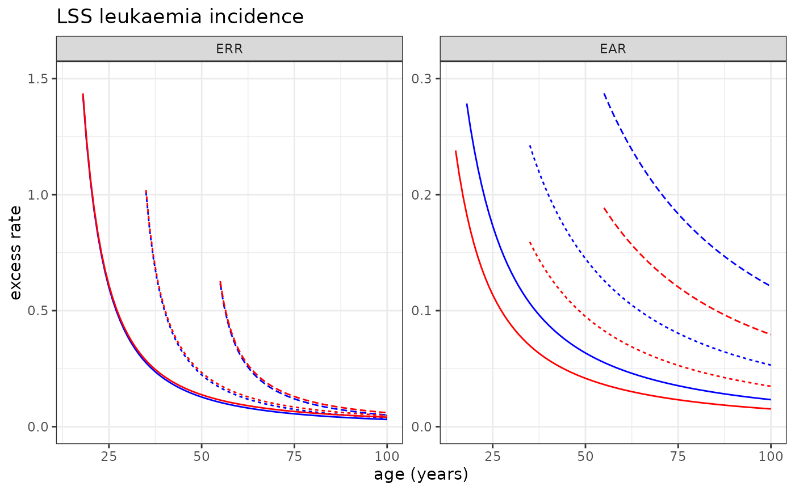

LSS incidence risk models
LSS_incidence.RdLSS incidence risk models for 13 cancer sites.
Format
A list object of :
allsolida list object which contains risk model information (see Details)
leukaemiaa list object which contains risk model information (see Details)
esophagusa list object which contains risk model information (see Details)
stomacha list object which contains risk model information (see Details)
colona list object which contains risk model information (see Details)
livera list object which contains risk model information (see Details)
lunga list object which contains risk model information (see Details)
prostatea list object which contains risk model information (see Details)
pancreasa list object which contains risk model information (see Details)
bladdera list object which contains risk model information (see Details)
breasta list object which contains risk model information (see Details)
thyroida list object which contains risk model information (see Details)
brainCNSa list object which contains risk model information (see Details)
Details
The list object for each risk model contains the 13 site-specific cancer incidence risk models derived from Life Span Study (leukaemia, esophagus, stomach, colon, liver, lung, prostate, pancreas, bladder, breast, thyroid, brainCNS).
Each site-specific list object contains information for the risk model (a vector of parameter estimates para, a matrix of variance-covariance matrix of parameter estimates var and a function to calculate the risk f).
References
Grant, E.J., A. Brenner, H. Sugiyama et al. Solid Cancer Incidence among the Life Span Study of Atomic Bomb Survivors: 1958-2009. Radiat Res 187(5): 513-537 (2017).
Hsu, W.L., D.L. Preston, M. Soda et al. The incidence of leukemia, lymphoma and multiple myeloma among atomic bomb survivors: 1950-2001. Radiat Res 179(3): 361-382 (2013).
Sakata, R., D.L. Preston, A.V. Brenner et al. Radiation-Related risk of cancers of the upper digestive tract among Japanese atomic bomb survivors. Radiat Res 192(3): 331-344 (2019).
Sadakane, A., B. French, A.V. Brenner et al. Radiation and Risk of Liver, Biliary Tract, and Pancreatic Cancers among Atomic Bomb Survivors in Hiroshima and Nagasaki: 1958-2009. Radiat Res 192(3): 299-310 (2019).
Sugiyama, H., M. Misumi, A. Brenner et al. Radiation risk of incident colorectal cancer by anatomical site among atomic bomb survivors: 1958-2009. Int J Cancer 146(3): 635-645 (2020).
Sugiyama, H., M. Misumi, M. Kishikawa et al. Skin cancer incidence among atomic bomb survivors from 1958 to 1996. Radiat Res 181(5): 531-539 (2014).
Brenner, A.V., D.L. Preston, R. Sakata et al. Incidence of Breast Cancer in the Life Span Study of Atomic Bomb Survivors: 1958-2009. Radiat Res 190(4): 433-444 (2018).
Grant, E.J., M. Yamamura, A.V. Brenner et al. Radiation Risks for the Incidence of Kidney, Bladder and Other Urinary Tract Cancers: 1958-2009. Radiat Res 195(2): 140-148 (2021).
Mabuchi, K., D.L. Preston, A.V. Brenner et al. Risk of Prostate Cancer Incidence among Atomic Bomb Survivors: 1958-2009. Radiat Res 195(1): 66-76 (2021).
Furukawa, K., D. Preston, S. Funamoto et al. Long-term trend of thyroid cancer risk among Japanese atomic-bomb survivors: 60 years after exposure. Int J Cancer 132(5): 1222-1226 (2013).
Brenner, A.V., H. Sugiyama, D.L. Preston et al. Radiation risk of central nervous system tumors in the Life Span Study of atomic bomb survivors, 1958-2009. Eur J Epidemiol 35(6): 591-600 (2020).
Examples
names(LSS_incidence) # Sites for which LSS incidence risk models are available
#> [1] "allsolid" "leukaemia" "esophagus" "stomach" "colon" "liver"
#> [7] "lung" "prostate" "pancreas" "bladder" "breast" "thyroid"
#> [13] "brainCNS"
names(LSS_incidence$allsolid) # Available dose response models
#> [1] "L" "LQ"
LSS_incidence$allsolid$L$err # Linear ERR model for all solid cancer incidence
#> $para
#> sexMale:dgy sexFemale:dgy lage70:sexMale lage70:sexFemale
#> 0.2731771 0.6398698 -2.5640146 -1.3783097
#> e30 hidoseTRUE
#> -0.2330051 -0.2761703
#>
#> $var
#> sexMale:dgy sexFemale:dgy lage70:sexMale lage70:sexFemale
#> sexMale:dgy 0.0021308300 0.000526540 0.0119066187 -0.0015145731
#> sexFemale:dgy 0.0005265400 0.003944061 -0.0019637448 0.0057283111
#> lage70:sexMale 0.0119066187 -0.001963745 0.2072085784 0.0090031922
#> lage70:sexFemale -0.0015145731 0.005728311 0.0090031922 0.0708425868
#> e30 0.0008522796 0.001378741 -0.0046736366 -0.0053350872
#> hidoseTRUE -0.0012531791 -0.002191058 -0.0002535854 0.0004417784
#> e30 hidoseTRUE
#> sexMale:dgy 0.0008522796 -0.0012531791
#> sexFemale:dgy 0.0013787414 -0.0021910581
#> lage70:sexMale -0.0046736366 -0.0002535854
#> lage70:sexFemale -0.0053350872 0.0004417784
#> e30 0.0028724210 -0.0003010759
#> hidoseTRUE -0.0003010759 0.0373994998
#>
#> $f
#> function( beta, data, lag=5 ){ exp( beta[5]*(data$agex-30)/10 ) *
#> ( (data$sex==1)*(beta[1]*data$dose) * exp(beta[3]*log(data$age/70))
#> + (data$sex==2)*(beta[2]*data$dose) * exp(beta[4]*log(data$age/70)) ) * (data$age - data$agex >= lag )
#> }
#>
LSS_incidence$allsolid$L$ear # Linear EAR model for all solid cancer incidence
#> $para
#> sexMale:dgy sexFemale:dgy lage70:sexMale lage70:sexFemale
#> 0.005444272 0.005452228 2.985824086 2.062337914
#> e30 hidoseTRUE
#> -0.341867615 -0.288156287
#>
#> $var
#> sexMale:dgy sexFemale:dgy lage70:sexMale lage70:sexFemale
#> sexMale:dgy 6.778181e-07 7.736991e-08 1.725090e-04 -2.136372e-05
#> sexFemale:dgy 7.736991e-08 2.718133e-07 -2.228262e-05 4.024986e-05
#> lage70:sexMale 1.725090e-04 -2.228262e-05 1.479262e-01 8.657096e-03
#> lage70:sexFemale -2.136372e-05 4.024986e-05 8.657096e-03 5.508209e-02
#> e30 1.329393e-05 1.258732e-05 -5.007734e-03 -4.483048e-03
#> hidoseTRUE -2.347392e-05 -1.818335e-05 -4.514195e-04 -7.435074e-06
#> e30 hidoseTRUE
#> sexMale:dgy 1.329393e-05 -2.347392e-05
#> sexFemale:dgy 1.258732e-05 -1.818335e-05
#> lage70:sexMale -5.007734e-03 -4.514195e-04
#> lage70:sexFemale -4.483048e-03 -7.435074e-06
#> e30 2.655737e-03 -2.652011e-04
#> hidoseTRUE -2.652011e-04 3.709808e-02
#>
#> $f
#> function( beta, data, lag=5 ){ exp( beta[5]*(data$agex-30)/10 ) *
#> ( (data$sex==1)*(beta[1]*data$dose) * exp(beta[3]*log(data$age/70))
#> + (data$sex==2)*(beta[2]*data$dose) * exp(beta[4]*log(data$age/70)) ) * (data$age - data$agex >= lag )
#> }
#>
LSS_incidence$leukaemia$LQ$err # Linear-quadratic ERR model for leukaemia incidence
#> $para
#> dosegy dosegysq lage70 ltsx40 over4gy
#> 0.7899801 0.9500302 -1.0902127 -0.8075070 -0.7393616
#>
#> $var
#> dosegy dosegysq lage70 ltsx40 over4gy
#> dosegy 0.218448686 -0.05546524 0.004658701 0.02869619 0.050008104
#> dosegysq -0.055465238 0.12345202 0.039615996 0.02421521 -0.054519310
#> lage70 0.004658701 0.03961600 0.197238560 -0.05553209 -0.005061194
#> ltsx40 0.028696191 0.02421521 -0.055532086 0.06711943 0.002045340
#> over4gy 0.050008104 -0.05451931 -0.005061194 0.00204534 0.168883293
#>
#> $f
#> function( beta, data, lag=2 ){
#> tsx <- pmax( data$age-data$agex, 1e-20)
#> ( beta[1]*data$dose + beta[2]*data$dose^2) *
#> exp( beta[3]*log(data$age/70) + beta[4]*log((tsx)/40) ) * (tsx >= lag)
#> }
#> <bytecode: 0x55e7143581c0>
#>
LSS_incidence$lung$L$err # Linear ERR model for thyroid cancer incidence
#> $para
#> [1] 0.338734 1.310980 -2.117300 0.148667
#>
#> $var
#> md10gy fd10gy lage70 e30
#> 1 0.01294580 0.001574620 0.0184695 -0.001452620
#> 2 0.00157462 0.054668400 0.0380286 -0.000685352
#> 3 0.01846950 0.038028600 0.8945510 -0.044314000
#> 4 -0.00145262 -0.000685352 -0.0443140 0.013350400
#>
#> $f
#> function (beta, data, lag=5) {
#> ( (data$sex==1)*(beta[1]) + (data$sex==2)*(beta[2]) ) * data$dose *
#> exp( beta[3] * log(data$age/70) + beta[4] * (data$agex - 30)/10 ) *
#> (data$age - data$agex >= lag ) }
#>
# Plotting LSS all solid cancer incidence risk model
plot_riskmodel( rm=LSS_incidence$allsolid$L, title="LSS all solid cancer incidence, Linear", leg_pos=c(0.4, 0.95) )
#> Warning: Removed 5 rows containing missing values or values outside the scale range
#> (`geom_line()`).
# Plotting LSS Leukaemia incidence risk model
plot_riskmodel( rm=LSS_incidence$leukaemia$LQ, title="LSS leukaemia incidence", ymax=c(1.5, .3), add=c(0.01,0) )
#> Warning: Removed 6 rows containing missing values or values outside the scale range
#> (`geom_line()`).

# Plotting LSS thyroid cancer incidence risk model
plot_riskmodel( rm=LSS_incidence$thyroid$L, title="LSS thyroid cancer incidence", ymax=c(.5, .3) )
#> Warning: Removed 77 rows containing missing values or values outside the scale range
#> (`geom_line()`).